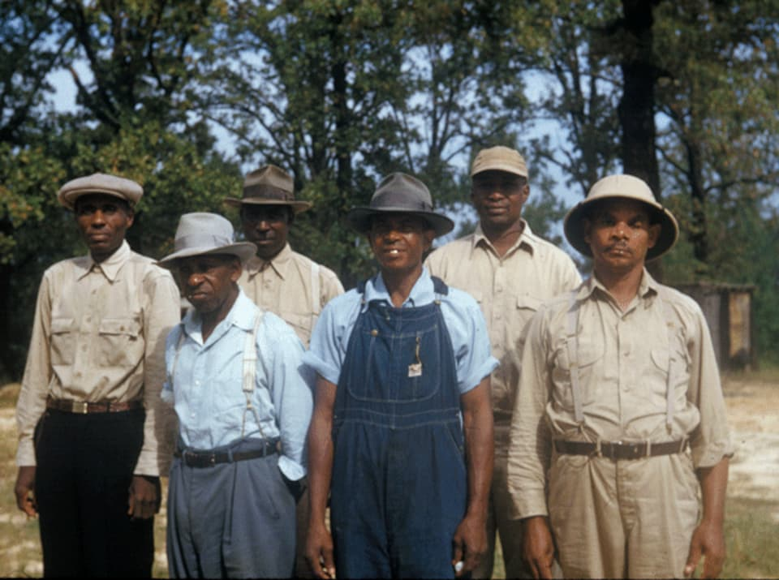
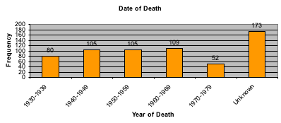
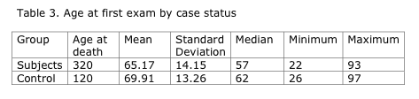
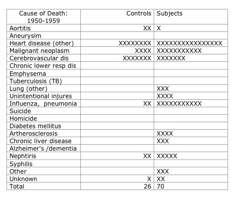
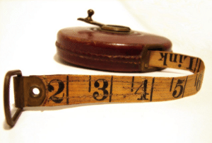

# install the package
install.packages("praise", repos = "http://cran.us.r-project.org")DATA 202 - Week 2
Foundations
Part I: Context
Case Study
Tuskegee Study of Untreated Syphilis in the Negro Male
We begin by exploring a critical historical issue in statistics: understanding the ethics of a medical intervention or study.

“In 1932, the USPHS, working with the Tuskegee Institute, began a study to record the natural history of syphilis. It was originally called the”Tuskegee Study of Untreated Syphilis in the Negro Male” (now referred to as the “USPHS Syphilis Study at Tuskegee”). The study initially involved 600 Black men – 399 with syphilis, 201 who did not have the disease. Participants’ informed consent was not collected.” (Office of Science, Centers for Disease Control and Prevention, 2022)
All images are from Examining Tuskegee by Susan Reverby.











Ethics and statistics
This case study will help frame our understanding between ethics and statistics. The study will allow us to explore longstanding injustices, consider ethical practices in historical contexts, and explore the sociology of statistics. More specifically, we will use this case to understand the history of the Institutional Review Board (IRB) and discuss concepts related to scientific racism. These explorations will help in two key ways: first, we will come to understand what it can mean to be critical in the context of statistics and, second, we will be prepared to respond to problems focused on main concepts in the first few weeks of our course. We will then formalize a few terms.
Framing a relationship between ethics and statistics
The “Tuskegee Study of Untreated Syphilis in the Negro Male” (now referred to as the “USPHS Syphilis Study at Tuskegee”) took place in Macon County, Alabama, in an area known as the “Black Belt” because of its rich soil and vast number of Black sharecroppers who were the economic backbone of the region. The research took place at the Tuskegee Institute.
Purpose of the study
The intent of the study was to record the natural progression of syphilis in Black men. The study was related to a 1928 retrospective study, the “Oslo Study of Untreated Syphilis,” which reported on the pathological manifestations of untreated syphilis in several hundred white males. However, this original study used secondary data to piece together findings. When the study was initiated in the U.S., there were no proven treatments for the disease. Researchers told the men participating in the study that they were to be treated for “bad blood.” This term had been used by local community members to describe a host of ailments that could be diagnosed including things like anemia, fatigue, and syphilis.
Study participants
A total of 600 men were enrolled in the study.
- Of this group 399, who had syphilis were a part of the experimental group, and 201 were control subjects.
- Most of the men were poor and illiterate sharecroppers from the county.
- The participants were offered medical care and insurance.
- They were enrolled in the study with incentives as well, including medical exams, rides to and from the clinics, meals on examination days, free treatment for minor ailments and guarantees that provisions would be made after their deaths in terms of burial stipends paid to their survivors.
Ethical issues
- There were no proven treatments for syphilis when the study began in 1932.
- When penicillin became the standard treatment for the disease in 1947 the medicine was withheld as a part of the treatment for both the experimental group and control group.
- On July 25, 1972, Jean Heller of the Associated Press broke the story that appeared in both New York and Washington, that there had been a 40-year non-therapeutic experiment called “a study” on the effects of untreated syphilis on Black men in the rural South.
- Between the start of the study in 1932 and 1947, the date when penicillin was determined as a cure for the disease, dozens of men had died and their wives, children and untold number of others had been infected.
- There was evidence that scientific research protocol routinely applied to human subjects was either ignored or deeply flawed to ensure the safety and well-being of the men involved. Specifically, the men were never told about or offered the research procedure called informed consent.
Researchers had not informed the men of the actual name of the study, its purpose, and potential consequences of the treatment or non-treatment that they would receive during the study. The men never knew of the debilitating and life-threatening consequences of the treatments they were to receive, the impact on their partners and children they may have conceived once involved in the research. The panel also concluded that there were no choices given to the participants to quit the study when penicillin became available as a treatment and cure for syphilis. Reviewing the results of the research the panel concluded that the study was “ethically unjustified.” The panel articulated all the above findings in October of 1972 and then one month later the Assistant Secretary for Health and Scientific Affairs officially declared the end of the Tuskegee Study.
Class-Action Suit
In the summer of 1973, Attorney Fred Gray filed a class-action suit on behalf of the men in the study, recognized partners, children, and families. It ended a settlement giving more than $9 million to the study participants. Despite these reparative measures, the effects remain.
Institutional Review Board (IRB)
The Tuskegee Syphilis Study conducted by the U.S Public Health Service was only one of many other past abuses that included unethical experimentation on marginalized groups. As a result of these injustices, a set of mandates were instituted and policies are governed under the IRB, which define the rules and regulations for the approval of research activities. Other countries have equivalent measures focused on ethics.
Additional details about can be found online.
Learn more at https://www.cdc.gov/tuskegee/timeline.
Part II: Content
Quantification of information can help us understand and represent important situations.

We’ll begin by exploring the concept of a set, and how it is defined in mathematics and used to frame various situations.
A set is characterized by its contents, or what is generally referred to as a set’s elements. If we are given two sets, the sets are considered equal if and only if they have exactly the same elements. The basic relation for sets is that of membership in a particular set.
- We write \(x \in X\) to indicate that the object \(x\) is an element (or member) of the set \(X\).
A FEW IMPORTANT NOTES:
Note 1: We tend to label sets using capital letters.
- For example, we may label two different sets as \(X\) and \(Y\) or as \(A\) and \(B\).
Note 2: We use curly brackets { and } to enclose the elements of a set.
- Parentheses ( and ) are often used to indicate a point like \((x, f(x))\) or an open interval
- Square brackets [ and ] are often used to separate sets or to indicate a closed interval.
Note 3: We tend to list the elements of a set using lower case letters with subscripts, \(x_i\).
- The \(i\) in \(x_i\) is a subscript that is used as a “position indicator,” with \(i = 1, 2, 3, ...\)
- We use subscripts to index the elements of a set: \(X = \{x_1, x_2, ..., x_n\}\) and \(A = \{a_1, a_2, ..., a_n\}\).
Quantifying elements of a set allows us to perform mathematical operations on those elements. Together, the elements and operations combine to create equations, functions, and models that help us understand and communicate details about the elements of a set – which is a form of data. We will need a host of math concepts. The different sets of numbers can be a fun starting point.
Sets and numbers
What is statistics?
Statistics is a science. As a result, it follows a set of well-defined steps or methods. As we explore new terms and definitions, we will gain a better understanding of what statistics encompasses.
There are a multitude of ways to describe the steps, terms, and various processes undertaken in a statistical study. Importantly, statistics calls for questions where we explore difference or change. We use variation to understand differences within or between a set (or sets) of measurements.
What should it mean to be critical in the context of statistics?
On Canvas, in the Week 2 folder, there is a document titled “Critical Thinking” by Jennifer Duncan. This document is one example of how we can frame what it could or should mean to be critical in statistics. Please review this document.
Using a higher order of thinking. Duncan emphasizes that critical thinking is a higher order of thinking with different advanced thinking skills, and offers a few suggestions.
We base our thinking on logic and not on feelings.
We should look deeper into inferences for hidden assumptions or values.
Ask complex questions that help build a critical inquiry.
Asking complex questions. Duncan breaks down the process into a few sub-questions.
Who is the implied audience?
What are the strengths and weaknesses of the argument?
What are the underlying assumptions and values?
- Using a variety of thinking processes. Duncan defines a process around analyzing, synthesizing, interpreting, and evaluating information that helps with our thinking.
- Reflecting on how we answer a question. Duncan ends with a set of questions that help us think about different points of view, if we have clarity, and if more details are needed.
Part III: Code
Getting started in RStudio
In Lab 0, you downloaded and installed base R and RStudio. In this section, we will learn more about R and RStudio.
Let’s start with a little fun!
First, install the ‘praise’ package.
Next, load the library for the ‘praise’ package.
# load library
library(praise)Now, get some praise!
# get some praise
praise()You can keep inserting the code above to get praise when you need it!
Arithmetic in R
We will learn how to calculate values in R.
1 + 2 # the 'plus sign' computes the sum[1] 32 - 3 # the 'minus sign' computes the difference[1] -13 * 4 # the 'asterisk' computes the product[1] 124 / 5 # the 'forward slash' computes the quotient[1] 0.8# from hw exercise 0.2, we can compute the sum of the first 100 positive integers
sum(1:100) [1] 5050Variables in R
We will learn to give a variable (or character) a value.
Use the different assignment operators
y = 2 # the equal sign can be used as an assignment operator
y <-2 # a "less than" sign and dash can also be used as an assignment operator
y # R stores all values you assign, so you must "call" any variables to see their values[1] 2Set x equal to two added to three
x = 2 + 3
x[1] 5Set y equal to two minus three
y = 2 - 3
y[1] -1Set z equal to two times three
z = 2 * 3
z[1] 6Overwrite the value of y by setting y equal to x divided by z
y = x / z
y[1] 0.8333333Paper 1 is due on Thu August 31 at 11:59pm ET
Please see a sample paper #1 here.
Next up: Week 3
We will consider the role of evaluation in using data for evidence. Specifically, we continue our explorations in R by learning how to load data sets into our data frame, and perform some basic operations using some additional packages. These packages will allow us to consider how we can construct original data sets to develop unique questions for our analysis.